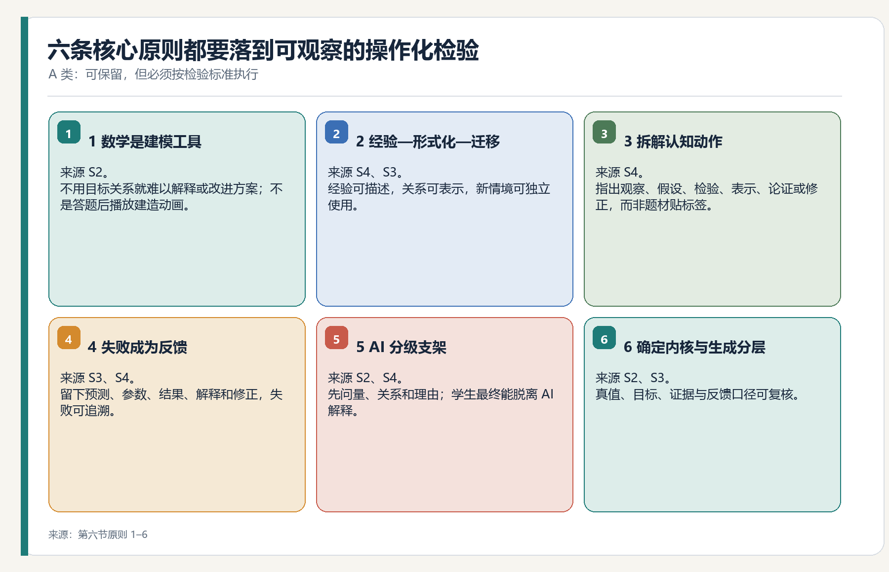

CRITERIA · 2026-11-28
评价标准与原则库
以下条目来自《PBL 数学相关分享材料评阅与设计原则提炼》，按同一标准重述。
原则不是口号：每条都需要转化为可观察的检验。图表颜色表示文本覆盖或论证关系，不是产品效果分数。
六维标准

图 3｜技术验证与学习验证分别检查。
统一评阅框架
| PBL 保真度 | 真实、开放、劣构问题；学生界定问题、协作探究、公开成果、互评与反思；教师为促进者 |
|---|---|
| 数学质量 | 围绕数学大概念；量、单位、关系、表示与论证严谨；避免伪数学 |
| 学习机制 | 经验、冲突、解释、形式化、反馈、修正与迁移的闭环 |
| AI 设计 | 追问梯度、透明度、隐私、防认知外包与失效兜底边界 |
| 评价证据 | 区分操作成功、行为线索、概念理解与迁移；多源证据 |
| 实施可行性 | 年龄、先备知识、课时、团队规模与技术条件；技术验证与学习验证分开 |
A · 可保留图 14｜核心原则需要转化为可观察检验。
六条核心原则
- 让数学成为完成真实任务所必需的建模工具，而不是游戏外的答题门票。 （来源 S2）
- 采用“经验 → 形式化 → 迁移”的学习闭环。 （来源 S4、S3）
- 从认知动作而非题材相似性拆解游戏。 （来源 S4）
- 让失败成为可检验假设的反馈，而非只显示成功/失败。 （来源 S3、S4）
- AI 优先追问和提供分级支架，不替学生完成核心数学推理。 （来源 S2、S4）
- 确定性学习内核与生成式表达分层。 （来源 S2、S3）

B · 加边界
八条原则的必要边界
- 用概念依赖图设计支架。
- 培养学生定义问题和判断责任。
- 使用物理仿真支持数学探究。
- 在明确边界内使用可教、可质疑的 AI 学伴。
- 使用行为日志进行隐性评估。
- 采用哲学原则指导学习。
- 小团队先做垂直切片。
- 引用研究支持设计。
C · 补入
完整 PBL 与外部案例要求
- 完整 PBL 必须包含社会性论证与公开成果。
- 教师是促进者，不是答案播报员或完全旁观者。
- 评价必须区分操作成功、概念理解和迁移。
- 结构化反思是学习环节，不是结束语。
- 单人探究、合作游戏与完整课堂 PBL 必须分层声明。
- 自主性应围绕学习目标分级释放。
- 岛屿或小镇必须承载数学关系或问题生成，而不只是奖励布景。
不采纳 · 12 条

明确不应作为原则的表述
- 游戏很聪明、很烧脑，所以能提高数学或一般智力。
- 学生在某类任务反复失败，就能定位某个知识点缺陷。
- 公式一律不能先出现。
- 物理越真实、画面越精细，学习越有效。
- 只要学生在做事，就是在做中学。
- 引用哲学家即可完成理论论证。
- 为了防盲从，可以不透明地让 AI 故意教错。
- 有个人探索和迭代，就完成了 PBL。
- 技术 Demo 的 GO 结论同时证明教育方案可行。
- 逻辑上越基础的讲解，就越适合作为学生的学习起点。
- 自主行动越多，PBL 就越充分、学习就越好。
- 只要使用游戏，效果就必然优于讲授或其他活动。
证据分层
图 18｜解释与独立变式提供交叉验证，延迟保持需另设任务。
操作成功 ≠ 概念理解